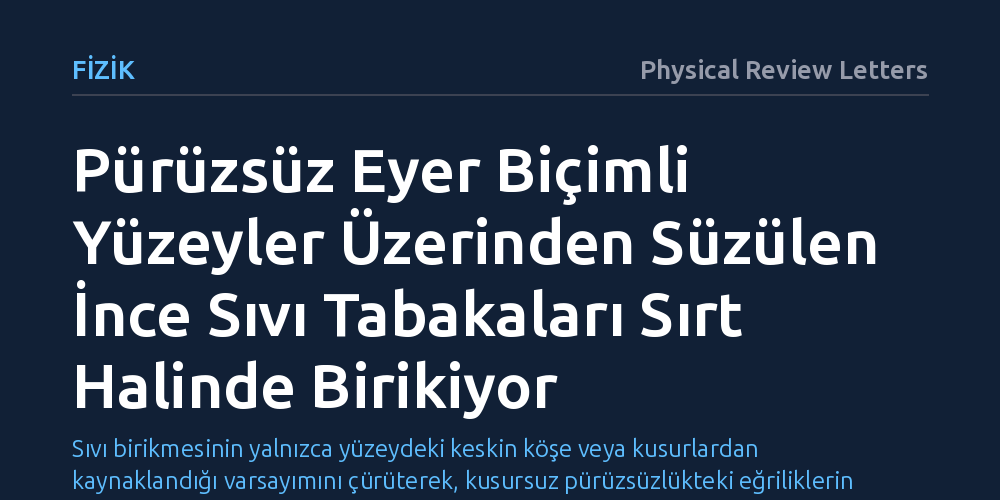

FIZIK · Physical Review Letters · 2026-10-17
Araştırmacılar, karmaşık yüzeylerden yerçekimiyle süzülen ince sıvı filmlerinin herhangi bir kusur veya keskin kenar olmaksızın nasıl biriktiğini inceledi. Deneyler ve modeller, tamamen pürüzsüz bir eyer yüzeyinin tek başına logaritmik olarak sivrilen belirgin bir sıvı sırtı oluşturduğunu ortaya koydu.
Sıvı birikmesinin yalnızca yüzeydeki keskin köşe veya kusurlardan kaynaklandığı varsayımını çürüterek, kusursuz pürüzsüzlükteki eğriliklerin de akışı kendiliğinden yoğunlaştırabileceğini gösteriyor.

Boya yaparken, araba kaportası kaplarken ya da yamaçtan aşağı süzülen bir lav akıntısını gözlemlerken sıvının bazı noktalarda aniden biriktiğini ve damlacıklar oluşturduğunu görürüz. Bugüne kadar mühendislikte ve yer bilimlerinde yaygın kabul gören sezgi, bu tür ani birikmelerin yüzeydeki keskin bir köşe, belirgin bir basamak ya da mikroskobik bir pürüz gibi kusurlardan kaynaklandığı yönündeydi. Bir yüzey ne kadar pürüzsüz olursa, üzerindeki sıvı filminin de o kadar homojen ve kesintisiz akacağı varsayılırdı.
Ancak bu kabul kritik bir soruyu açıkta bırakıyordu: Geometrisi tamamen kusursuz ve pürüzsüz olan kıvrımlı yüzeylerde de sıvı akışı kendi kendine yoğunlaşabilir mi? Eğer yüzeyin sahip olduğu geometrik eğrilik akışı belli bir hatta zorlayıp biriktiriyorsa, endüstriyel kaplamalardan volkanik lavların yayılışına kadar pek çok alandaki dengesiz birikmelerin nedeni kusurlar değil, temel akışkan mekaniği yasaları olabilir.
Araştırma ekibi bu sorunun yanıtını bulmak için üç yönlü bir yöntem izledi: kontrollü laboratuvar deneyleri, yüksek çözünürlüklü bilgisayar simülasyonları ve asimptotik matematiksel analizler. İncelenen yüzey olarak, at semerini andıran ve matematikte semer noktası (eyer yüzeyi) olarak adlandırılan, birbirine zıt yönlerde iki farklı eğriliğe sahip tamamen pürüzsüz yüzeyler seçildi.
Çalışmada akışkanlığı standart kurallara uyan (Newton tipi) sıvılar kullanıldı ve yerçekimi altında yüzeyden aşağı süzülüşleri hassas optik yöntemlerle takip edildi. Ardından klasik ince film yağlama yaklaşımı çerçevesinde yerçekimi, hidrostatik basınç ve yüzey gerilimi (kılcallık) kuvvetlerinin etkileşimi modellendi. Böylece laboratuvarda gözlenen akış biçimleri teorik denklemlerle doğrudan karşılaştırıldı.
Elde edilen sonuçlar beklenmedik bir fiziksel mekanizmayı ortaya koydu: Eyer biçimli yüzey üzerinde hiçbir köşe, kenar veya kusur olmamasına rağmen, süzülen sıvının akış yolları merkezde bir araya gelerek logaritmik olarak sivrilen keskin bir sıvı sırtı oluşturuyordu. Sıvı tabakası bu dar hat boyunca adeta bir huniye girmiş gibi sıkışıyor ve yerel kalınlığını aniden katlayarak birikiyordu.
Teorik hesaplarda sonsuza doğru giden bu keskin sivrilmenin doğada nasıl dengelendiği de açıklandı. Yerçekiminin aşağı çektiği akış kuvveti, o hatta biriken sıvının oluşturduğu hidrostatik basınç ve yüzey geriliminin yayma eğilimiyle dinamik bir sınır bölgesinde dengeleniyor; böylece sırt sonsuza varmadan kararlı ama oldukça belirgin bir yükselti halinde kalıyordu.
Bu bulgu, akışkanlar mekaniğinde pürüzsüz geometrilerin bile akışta kendiliğinden tekillikler ve bölgesel birikimler yaratabileceğini gösteriyor. Uygulama açısından bakıldığında; otomotiv ve havacılık sektörlerinde kıvrımlı parçaların boyanması veya koruyucu polimerlerle kaplanması sırasında oluşan istenmeyen birikinti ve akıntı izlerinin ardındaki neden artık çok daha net anlaşılabilir. Mühendisler, sorunu malzeme veya püskürtme kusurlarında aramak yerine yüzey geometrisini optimize ederek bu birikintileri tasarım aşamasında engelleyebilirler.
Jeofizik açısından ise bu mekanizma, volkanik patlamalarda engebeli arazilerden aşağı inen lavların neden belirli hatlarda aniden birikerek yeni setler veya yön sapmaları oluşturduğunu izah etmek için yeni bir teorik zemin sunuyor. Gelecek çalışmalar, bu etkinin boyalar gibi karmaşık akış özellikleri taşıyan sıvılarda ve birbirini kesen birden fazla geometrik yapıda nasıl işlediğini aydınlatmaya odaklanacak.